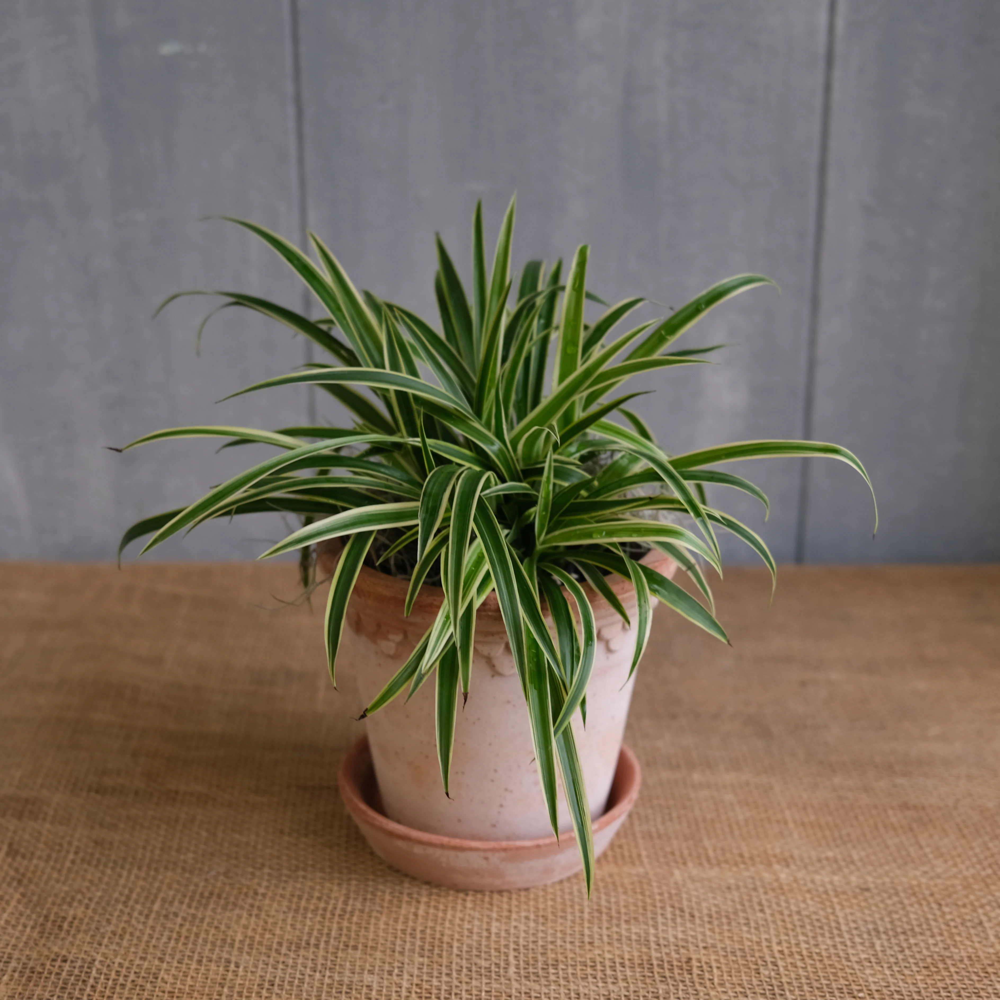

Back to Plant Profiles

Spider Plant
Chlorophytum comosum
Quick Facts:
Native to: South Africa
Light: Bright - moderate indirect sunlight
Water: approx. once per week
Soil: soil-based, well-draining potting mix, neutral pH
Ideal temperature: 55 - 80 degrees Fahrenheit (13 - 27 degrees Celcius)
Pet friendly: Can potentially be harmful
Links:
University of Wisconsin Horticulture: Spider Plant,
Chlorophytum comosum
Almanac: How to Care for Spider Plants
The Sill: How to Care for a Spider Plant
The Wildest: Are Spider Plants Toxic to Cats?